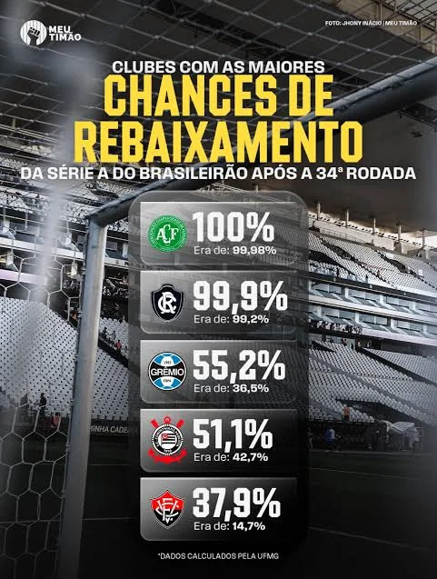

Corinthians chega a 51,1% de risco de rebaixamento em levantamento da UFMG
Estimativa de queda sobe de 42,7% para 51,1% após a 34ª rodada; Corinthians terá quatro compromissos decisivos no Brasileirão.

O Corinthians entrou na reta final do Campeonato Brasileiro sob pressão crescente. Segundo levantamento da Universidade Federal de Minas Gerais (UFMG) divulgado pelo Lance! neste domingo, 8 de novembro, a probabilidade estatística de rebaixamento do clube subiu de 42,7% para 51,1% após a 34ª rodada. A diferença é de 8,4 pontos percentuais.
O empate com o São Paulo e os resultados de concorrentes diretos, como Internacional e Mirassol, pesaram na atualização do cenário. O Corinthians soma nove vitórias, dez empates e quinze derrotas em 34 rodadas, com 36 gols marcados e 42 sofridos, de acordo com os números publicados pelo Lance!.
O que isso significa?
É importante entender o indicador: 51,1% é a estimativa de um modelo estatístico em uma data específica, e não significa que o rebaixamento esteja definido. Os resultados das últimas partidas podem mudar significativamente o cálculo.
O calendário restante inclui Botafogo em casa, Atlético-MG fora, Grêmio em casa e Remo fora. O primeiro compromisso está marcado para 18 de novembro, contra o Botafogo, na Neo Química Arena. Para o time comandado por Clarence Seedorf, cada ponto passa a ter peso ainda maior na disputa pela permanência.
A ShopFiel seguirá acompanhando os resultados e as novas projeções, sempre distinguindo as probabilidades do desfecho efetivo da competição.
Fonte da apuração: Lance!, 08/11/2026.